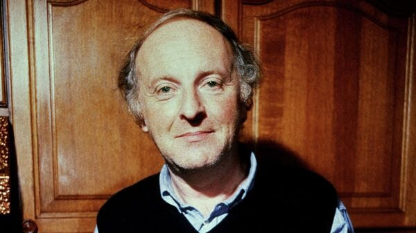

Я не то что схожу с ума, но устал за лето…
Я не то что схожу с ума, но устал за лето.
За рубашкой в комод полезешь, и день потерян.
Поскорей бы, что ли, пришла зима и занесла всё это —
города, человеков, но для начала зелень.
Стану спать не раздевшись или читать с любого
места чужую книгу, покамест остатки года,
как собака, сбежавшая от слепого,
переходят в положенном месте асфальт. Свобода —
это когда забываешь отчество у тирана,
а слюна во рту слаще халвы Шираза,
и, хотя твой мозг перекручен, как рог барана,
ничего не каплет из голубого глаза.

Иосиф Бродский
Иосиф Александрович Бродский — русский и американский поэт, эссеист,
драматург, переводчик, педагог. Лауреат Нобелевской премии по
литературе 1987 года, поэт-лауреат США в 1991—1992 годах. Стихи писал
преимущественно на русском языке, эссеистику — на английском.